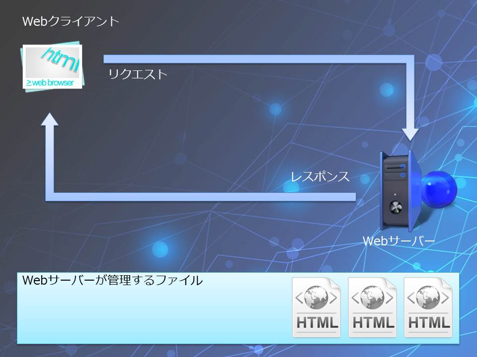
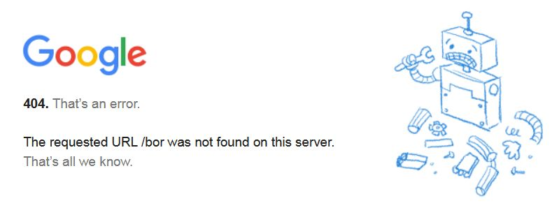
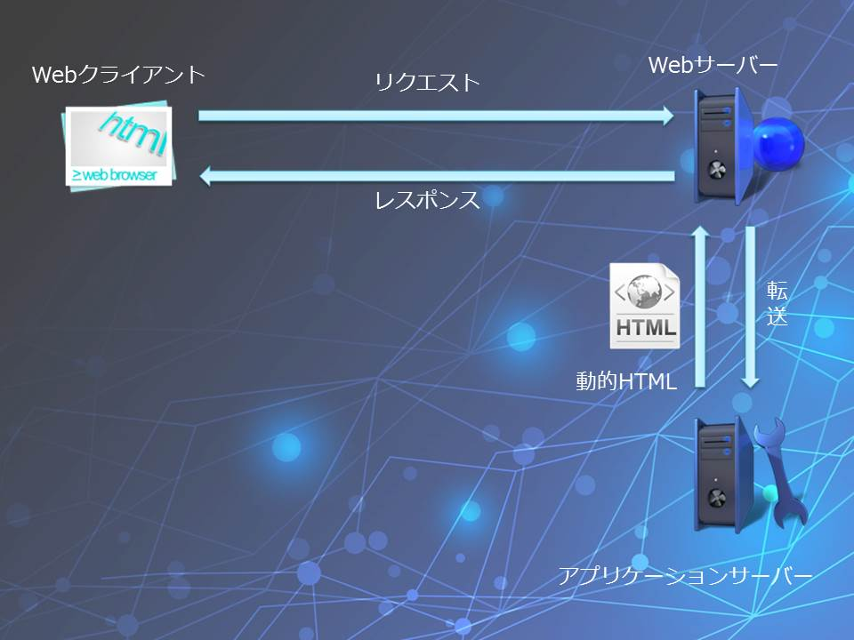
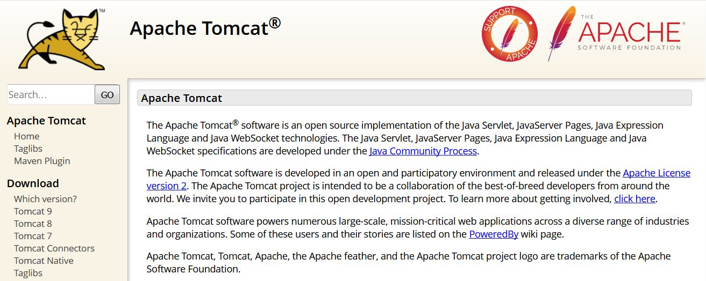

普段何気なく使っているインターネットですが、Webアプリケーションの開発者はWebの仕組みをきちんと理解しておく必要があります。ごくごく簡単に言ってしまうと、Webは要求（リクエスト）と応答（レスポンス）によって成り立っていると言えます。要求する側のソフトウェアをWebクライアント、要求を受け取る側のソフトウェアをWebサーバーといいます。Internet ExplorerやFirefox、Google ChromeなどのWebブラウザはWebクライアントの代表格です。これに対して、WebサーバーとしてはApache HTTP Server、IIS、CERNなどのソフトウェアがよく知られています。
図のようにWebクライアントから送信されたリクエストはWebサーバーで処理され、Webサーバーは自身が管理するファイルの中からWebクライアントに要求されたファイルをWebクライアントに返します。つまり、もしWebクライアントがindex.htmlというファイルを要求したならば、Webサーバーは自身が管理するファイルの中からindex.htmlというファイルをクライアントに返すということになります。ではWebサーバーが管理するファイルの中にindex.htmlが存在しなかったらどうなるか？
図のような画面を皆さんも一度は見たことがあるのではないでしょうか。これは404エラーといって、サーバーが要求されたリソースを見つけられなかった時に返されるエラーです。このように実はWebサーバーはクライアントから要求されたリソースをクライアントに返し、リソースが見つからなければエラーを発生させるといった動きをしています。ここで注意しなければならないのが、クライアントからのリクエストに応じてリソースの内容を書き換えるといった機能はWebサーバーにはないということです。クライアントから送信された検索条件に応じて検索結果が変化するWebページをクライアントに返すといったことはWebサーバーにはできません。Webサーバーはあくまでもクライアントから要求された静的なリソースをクライアントに返すのみです。
Web関連技術について少し詳しい人は、Webサーバーのみの構成であってもJavaScriptによって動的なコンテンツが生成可能ではないかと思うかもしれません。しかし、JavaScriptはWebブラウザ上で実行されます。つまり、JavaScriptを用いて動的なコンテンツを生成しているにしても、それはブラウザの機能を使ってブラウザ自身がコンテンツを動的に制御しているということなのです。この場合でもWebサーバーはHTMLファイルとJavaScriptのソースコードという静的な情報を返しているに過ぎません。Webサーバーから返されたJavaScriptのソースコードを解釈して実行するのはWebブラウザの仕事です。
WebサーバーはWebクライアントからの要求に応じてWebクライアントに静的な情報を返すことがその役割であることは既に見てきました。静的な情報とはリクエストがあった時点で既に存在している情報という意味です。ですから、予め記述されたHTMLファイルや予め保存されている画像データなどをWebクライアントに返すことについては全く何の問題もありません。しかし、これではユーザーの入力に応じてHTMLそのものを（例えば検索画面のように）変化させたいといったケースには対応できません。そこで、Webクライアントから送信されてきたリクエストを処理し、動的にHTMLを生成するような仕組みが考えられました。
そこで登場したのがアプリケーションサーバーです。アプリケーションサーバーはプログラムの実行環境を備え、HTMLを動的に生成する能力を持ちます。アプリケーションサーバーで実行されるのは通常のアプリケーションですから、検索だろうと登録だろうとプログラムで実現できることは全て実現できます。これにより、Webサーバーは予め用意されたリソースのかわりにアプリケーションサーバーが動的に生成したリソースをWebクライアントに返すことで動的なコンテンツを実現する能力を獲得しました。Webアプリケーションのはじまりです。
便宜上、Webサーバーとアプリケーションサーバーという風に分けて説明していますが、ほぼ全てのアプリケーションサーバーはWebサーバーとしての機能を備えています。しかし、WebサーバーにはWebサーバーの独自の役割があります。例えば、Webサーバーは外部に公開されるという性質上、高いセキュリティレベルが要求されます。このため、Webサーバーとしての機能に特化した（つまりアプリケーションサーバーとしての機能を持たない）サーバーソフトウェアもまだまだ現役で活躍中ですし、サイバー攻撃の多様化などの背景もあり、むしろ重要度が高まっているくらいです。この為、実際の運用ではWebサーバーとアプリケーションサーバーはそれぞれ別々のサーバーソフトウェアを用いることが一般的で、アプリケーションサーバーにWebサーバーを兼ねさせるということはあまり行われません。
アプリケーションサーバーとはプログラムの実行環境を備えたWebサーバーと考えることができます。JavaでWebアプリケーションを開発するにはJavaの実行環境（JRE）を備えたサーバーソフトウェアが必要になりますが、幸いなことにJavaにおけるアプリケーションサーバーは無料で使える高品質なソフトウェアが数多くあり、このことがJavaによるWebアプリケーションの普及を促進しているといっても過言ではないでしょう。この後の記事で、JavaによるWebアプリケーション開発の基礎を学んでいきますが、その際はアプリケーションサーバーとしてApache Tomcatを利用します。
次回の記事ではApache Tomcatのダウンロードと設定方法及びEclipseとの連携方法について解説していきます。